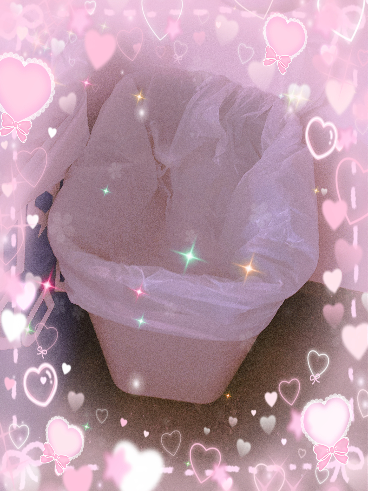

Dr. Alphys, PhD
@ALPHYS
952 followers | 845 following
Bio: Hi, I'm Alphys! I like Mew Mew, instant noodles, staying indoors, building robots and writing essays about my favourite characters. I'm also the royal scientist - but an anime nerd first and
Connecting the underground, one post at a time
@ALPHYS
952 followers | 845 following
Bio: Hi, I'm Alphys! I like Mew Mew, instant noodles, staying indoors, building robots and writing essays about my favourite characters. I'm also the royal scientist - but an anime nerd first and
dinner with the girlfriend ;)

Posted yesterday at 11:42pm | 240 likes | 52 reposts | 14 comments
OMG? ppl think Mew Mew 2 is better than Mew Mew 1? LOLLLLL that's a joke right...
Posted today at 3:26pm | 15 likes | 6 reposts | 67 comments
omg... DONT THEY GET IT RUINS Mew Mew's ENTIRE CHARACTER ARC
Posted today at 3:27pm | 13 likes | 2 reposts | 18 comments
My Mew Mew 2 Review: Mew Mew Kissy Cutie 2 Is Neither Kissy Nor Cutie. Its Trash. 0 stars
Posted today at 3:29pm | 153 likes | 10 reposts | 256 comments